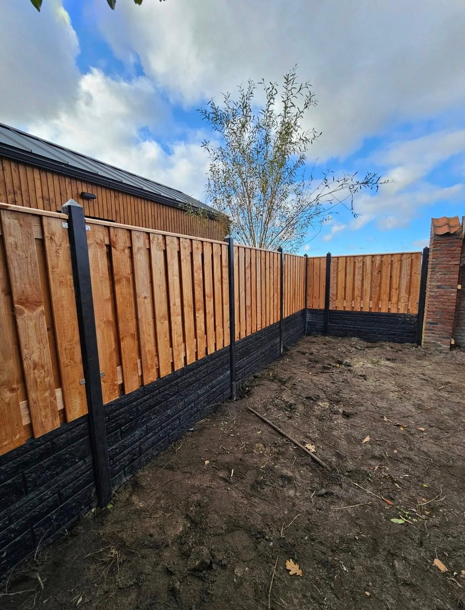

Bu ürünün fotoğrafları
Çit · Paneller
Elephant Finch çam çit paneli 180 × 180 cm
Düz çam panel, emprenyeli, panel kalınlığı 4,7 cm. Gizlilik sağlayan bir ayırıcı için.
Referans ürün harici bir tedarikçiden. Bu tipi teklifte sunarız. Kesin marka ve modeli orada teyit ederiz.
- Malzeme
- Çam, yeşil emprenyeli
- Panel boyutu
- 180 cm geniş, 180 cm yüksek
- Panel kalınlığı
- 4,7 cm
- Uygulama
- Düz panel
- Tedarikçi
- Elephant (HomingXL üzerinden)
- Tedarikçi ürün numarası
- 007237
- Bakım
- Daha fazla bakım: periyodik işlem rengi ve korumayı sürdürür
- Kaynak
- Tedarikçideki ürün kaydı. Yukarıdaki özellikler o kaydın başlığından gelir
Fiyat ve teslimat: teklifinizde yer alır. Diğer tarafların piyasa fiyatlarını kaynak ve tarihle şurada bulursunuz: malzemeler genel bakışı. Bu Sealcleaning fiyatı değildir.
Online sipariş henüz açık değil. Teklif istiyorsunuz. Hiçbir şeye bağlanmazsınız.
Bu panel sizin durumunuza uyar mı?
Bildiğinizi yanıtlayın. Atlamak serbest. Hiçbir şey kaydedilmez.
Maliyeti nedir ve neler hâlâ açık?
Bu bir göstergedir, teklif değil. Tutarlar kontrolden sonra kesinleşeceği için yazılmamıştır.
- Malzemeler
- Kontrolden sonra hesaplanır
- Teslimat
- Kontrolden sonra hesaplanır
- Montaj
- Yalnızca seçerseniz: kontrolden sonra hesaplanır
- Eski malzemelerin kaldırılması
- Yalnızca seçerseniz: kontrolden sonra hesaplanır
- KDV
- Teklifinizde yazar
- Kontrol edilecek
- Ölçüler, zemin, erişim ve seçilen ürün
Bir gösterge bir yöndür. Bir bağlayıcı olmayan teklif bizden bir öneridir, buna bağlı değilsiniz. Bir sipariş ancak sizin onayınızla bağlayıcı olur. Online sipariş şu an mümkün değil.
Bu panel hakkında sorular
Tam olarak ne alıyorum?
180 cm genişliğinde ve 180 cm yüksekliğinde, panel kalınlığı 4,7 cm olan emprenyeli çamdan tek çit paneli. Direkler, taban plakaları, bağlantı parçaları ve olası montaj ayrı kalemlerdir. Teklifinizde ayrıca yer alırlar.
Yüksekliği nereden ölçerim?
Zeminden çitin geleceği üst noktaya kadar ölçün. Bu panel 180 cm yüksekliktedir. Panel bir taban plakası üzerindeyse o da toplam yüksekliğe dahildir. İçinde tasarım yardımı bunu bir ölçek figürüyle görürsünüz.
Kaç panele ihtiyacım var?
Çitinizin uzunluğunu 1,8 metreye bölün ve yukarı yuvarlayın. 6 metre için bu yaklaşık 4 panel eder. Kapılar, köşeler ve direkler bunu değiştirebilir. Bunu teklifte kontrol ederiz.
Bu panel beton taban plakası üzerine konabilir mi?
Bu, seçtiğiniz direk ve plaka sistemine bağlıdır. Kombinasyonun uygun olup olmadığını önceden kontrol ederiz. Kendi işimizden bir örneği bu sayfanın üstünde görürsünüz.
Yalnızca malzemeyi teklife ekletebilir miyim?
Evet. ‘Yalnızca malzeme talebi’ni seçin. Online sipariş henüz açık değil. Fiyat ve teslimatı teklifte teyit ederiz.